UEDEV / 3D Navigation AI / How it works · Updated
Technical overviewHow 3D pathfinding works in Unreal Engine 5
Unreal Engine's built-in Recast navmesh can only answer one question: where can I stand? This plugin answers the one that flying AI actually needs: where is there empty air? It is a volumetric 3D navigation and pathfinding plugin for UE5 that turns the whole playable volume into a Sparse Voxel Octree, so drones, dragons, spaceships, helicopters, birds and underwater agents path through real 3D space instead of along a floor.
Rated 5.0 out of 5 from3 ratings on Fab- Representation
- Sparse voxel octree
- Solvers
- A* · Theta* · Lazy Theta*
- Smallest voxel
- 0.5 cm
- GPU build
- D3D12 · D3D11 · Vulkan
- Worlds
- Finite or streamed
- Unreal Engine
- 5.2–5.8
Why Unreal Engine's navmesh can't do 3D pathfinding
Recast, the navigation system that ships with Unreal Engine 5, voxelizes your level and then extracts the walkable surfaces from it, and the result is a set of polygons draped over the floor. That is exactly the right representation for a soldier, and completely the wrong one for a dragon. A flying AI has no floor to walk on, so a Recast navmesh gives it nothing to query.
The usual workarounds all leak. Raycast-and-steer looks fine in an open field and gets stuck the moment there is a concave building. Hand-placed waypoint graphs are expensive to author and go stale the instant a level artist moves a wall. Stacking navmeshes at several altitudes turns 3D navigation into a set of disconnected 2D floors, and still can't route diagonally through a shaft.
Volumetric navigation solves it properly by inverting the question. Instead of storing where geometry is, it stores where it isn't, in a Sparse Voxel Octree, and pathfinds through that empty volume in full 3D.
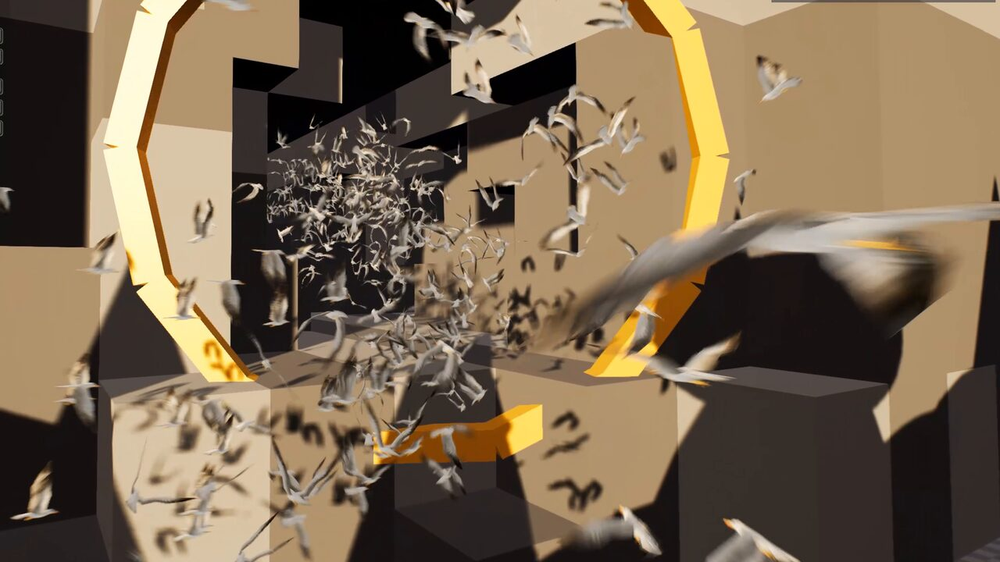
| UE5 Recast navmesh | LCM 3D Navigation AI (SVO) | |
|---|---|---|
| What it stores | Walkable surfaces: polygons on the floor | Navigable volume: the empty air and water |
| Dimensionality | 2.5D: a surface with height offsets | True 3D: any point in the playable volume |
| Suits | Humanoids, vehicles, ground crowds | Flying AI, drones, spaceships, submarines, insects |
| Vertical movement | Nav links, jumps, stacked meshes | Native: up, down and diagonal are the same query |
| Cost profile | Scales with floor area | Scales with clutter, not level size: open sky is a few large nodes |
| Solvers | A* over polygons | A*, Theta* and Lazy Theta* over octree nodes |
| Crowd scale | Detour crowd manager | 10,000+ agents via Mass Entity, per-agent or shared flow field |
| Can they coexist? | Yes. Run hybrid levels where ground troops use Recast and air units use the SVO. | |
How volumetric 3D pathfinding works
A Sparse Voxel Octree of the empty space
Drop a single LcmNavigationManagerSVO actor into the level and it owns the octree, the pathfinder and every query. The manager subdivides the playable volume only where geometry actually exists: a wide-open sky becomes a handful of large nodes, while a cluttered hangar interior subdivides down to the minimum voxel size. Cost therefore tracks how busy your level is rather than how big it is.
Voxelization, the octree and its links are built on the GPU (D3D12, D3D11 and Vulkan), and each machine's GPU proves its voxels before it builds; one that fails voxelizes on the CPU for that session. Voxels go down to 0.5 cm, so one plugin covers a centimetre-scale aquarium and a streamed open world.
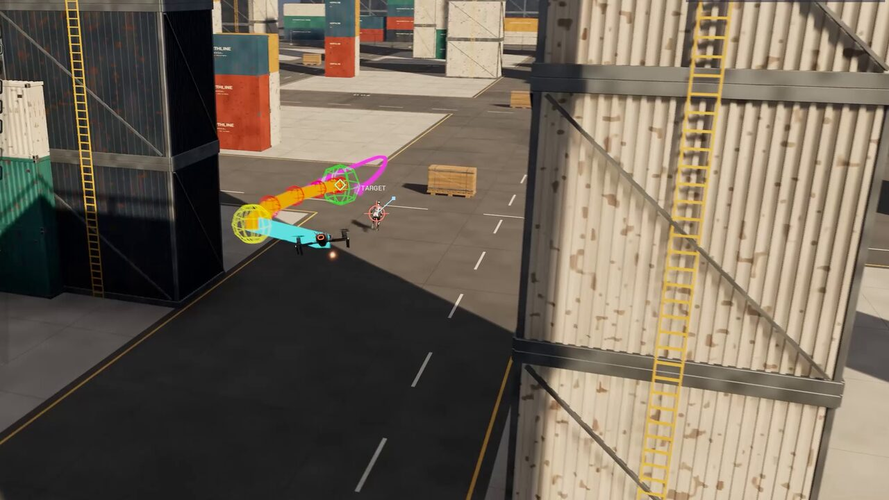
Three pathfinding solvers, three smoothing modes
Pick the trade-off that fits the agent: A* for raw throughput, Theta* for true any-angle routes that cut the corners a grid would force you around, and Lazy Theta* for near-Theta* path quality at close to A* cost. Solving is multi-threaded and deterministic, so the same input gives the same path every run.
Then choose smoothing (Raw, Linear Shortcut or Curved Spline), each validated against level geometry, so a smoothed path never slices through a wall.
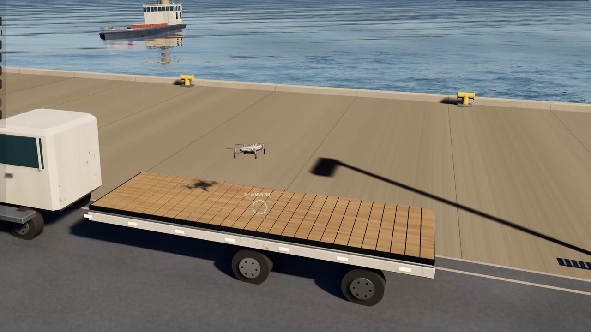
Dynamic obstacles that restamp, and agents that predict them
Moving geometry writes its own footprint back into the octree as it travels, so lifts, blast doors, destructible cover and patrolling capital ships all change routing live, and in multiplayer that change is multicast to every peer.
Since 3.6, Fly To also predicts each mover's motion and times its pass, so a drone waits for a gate's cycle or slips behind a sweeper instead of re-planning into it.
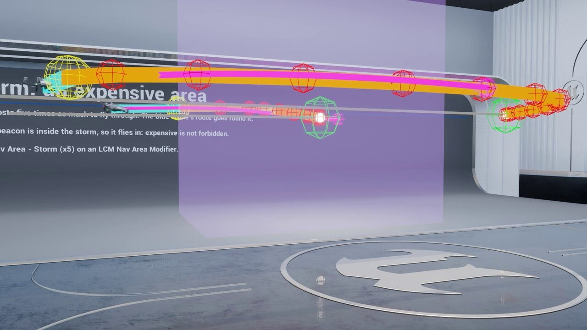
Cost areas priced per agent
Mark volumes as storms, preferred lanes, toll gates or no-fly zones with Unreal's stock NavArea classes. A stock Navigation Query Filter on each agent decides what an area costs that agent, or forbids it, so a cargo drone and a fighter read the same storm differently.
Fly To, Fly To Location, Mass crowds, Find Path and the stock Move To all route by them, across streamed chunk seams too.
Infinite worlds, not a bounded volume
Almost every volumetric navigation implementation for Unreal, including the open-source ones, starts by asking you to place a bounds volume and builds its octree inside it.
For an arena or a level-sized map a bounds volume is perfectly fine, and LCM 3D Navigation AI supports exactly that model: a finite world builds once at BeginPlay and stays put.
It stops being fine in an open world. A bounds volume has to be big enough to contain everywhere an agent may ever fly, memory scales with that box whether or not anything is happening inside it, and the moment your player crosses the edge, navigation simply ends.
Infinite mode removes the box. Navigation chunks stream in around agents and are discarded behind them, so memory stays flat no matter how far the map extends, for the same reason you stream level geometry rather than loading a continent. Long routes use macro/micro routing: the path solves coarsely across chunks first and finely within the chunk the agent is actually in, so a cross-map flight never pays full-resolution search cost end to end.
That combination, unbounded streaming navigation with hierarchical routing on top, is what makes 3D pathfinding usable in an open-world or World Partition project rather than only inside a hand-placed box.
BeginPlay or baked to an asset. Lowest overhead when your playable space genuinely is a box.Works with every Unreal Engine AI system
Whichever way your team authors behaviour, the same navigation data is available through every surface, with ready-made behaviours at full parity.
21 tasks, 5 decorators, 5 services
25 tasks, 8 conditions, 8 evaluators
10 tasks, 3 evaluators, on 8 traits
5 generators, 8 tests, 4 contexts
- Fly To LocationOne Blueprint node, no AI Controller
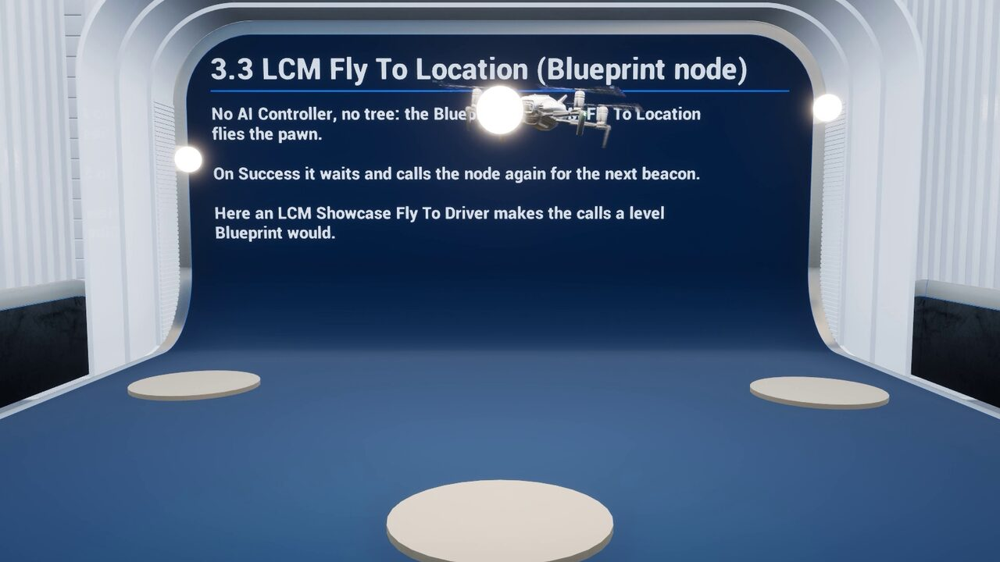
- PatrolRoutes between waypoints
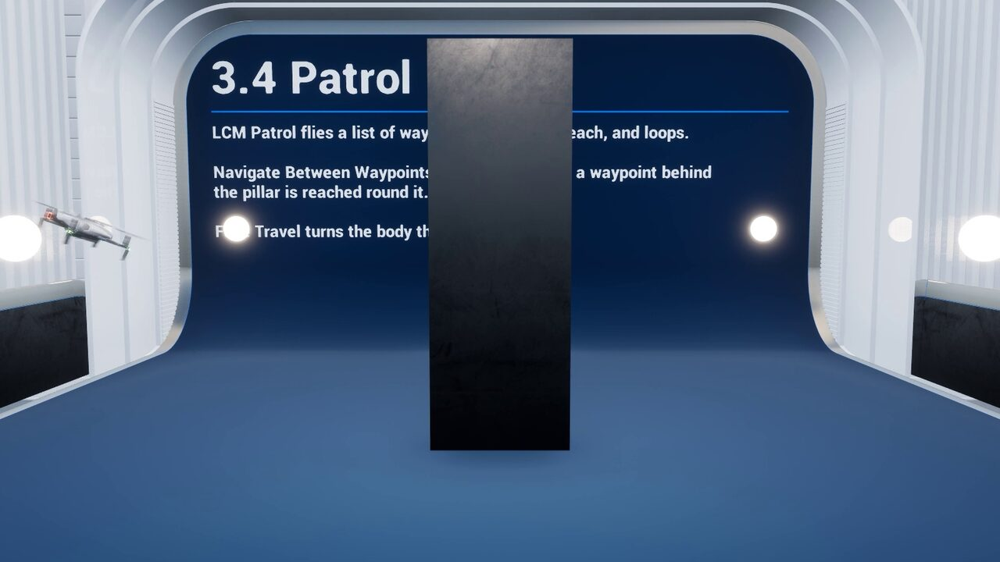
- Orbit TargetAt a set radius and speed
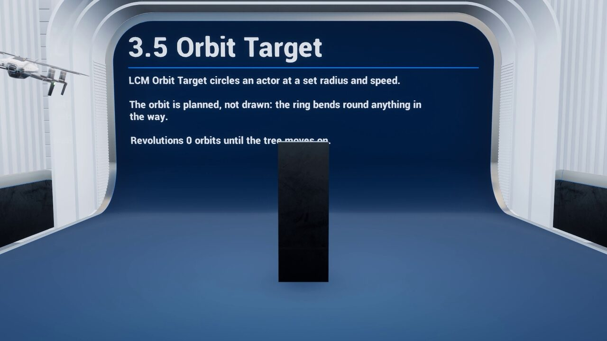
- Follow TargetFormation slots in the leader's frame
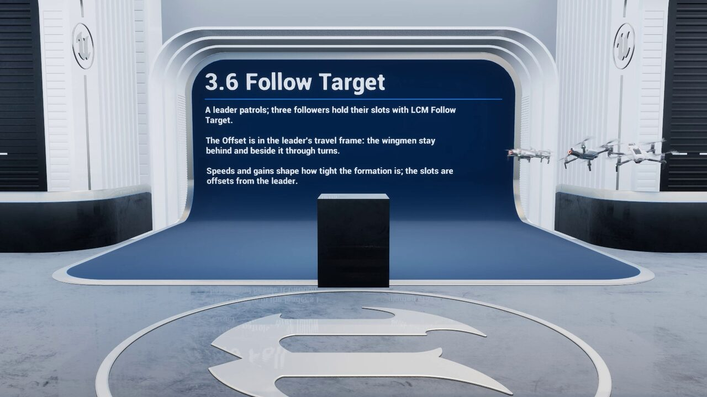
- Engage TargetA firing position with line of sight
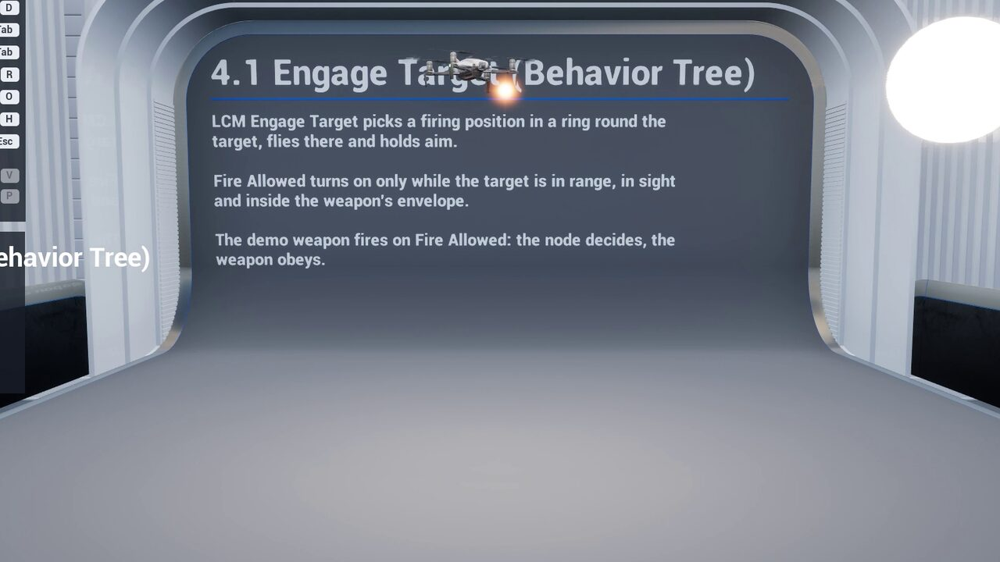
- Scan AreaA volume swept from shared viewpoints
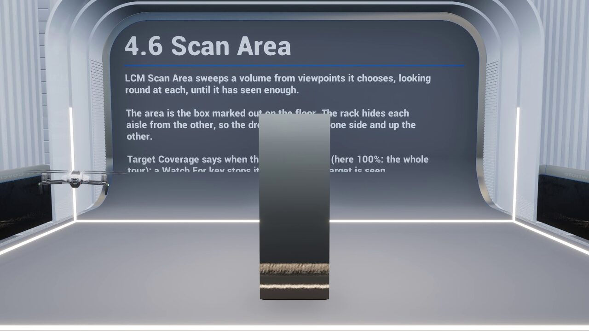
- PerchNo two agents on one post
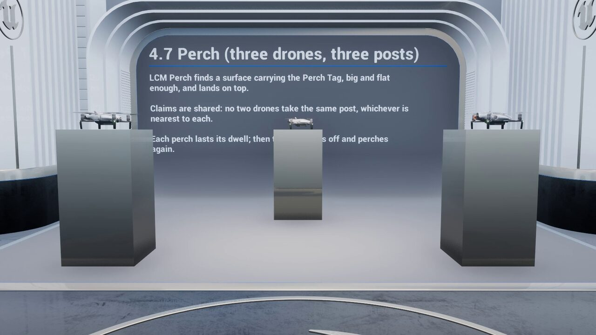
- LandOnto a moving platform or deck
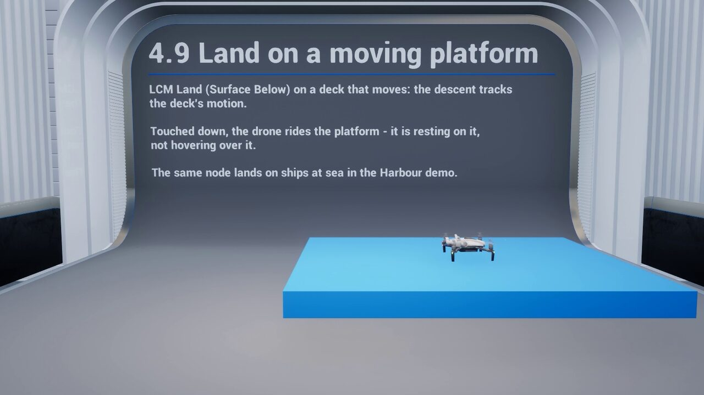
- Points in SVO VolumeEQS candidates anywhere in 3D
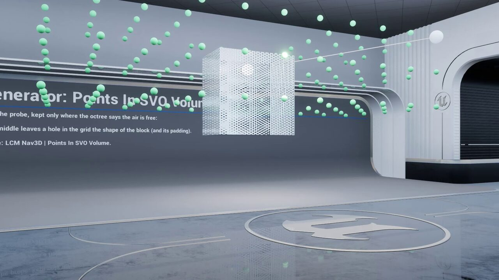
- Reachability 3DAnswered before any search
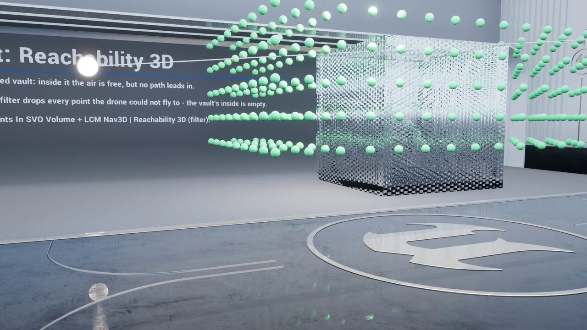
- Behaviour Tree: 21 tasks, 5 decorators and 5 services, including
FlyTo, Patrol, Orbit Target, Follow Target, Hover, Take Off, Land, Perch, Scan Area, Engage Target, Find Cover, Flee, Investigate, line-of-sight and chunk-loaded checks, with seven documented stock-node patterns showing where an LCM node earns its place over an engine one. - StateTree: 25 tasks, 8 conditions and 8 evaluators at full parity with the Behaviour Tree nodes, so state-driven agents get the same routing and behaviours with no Behaviour Tree in the stack.
- Mass Entity (ECS): eight traits: per-agent asynchronous pathfinding or a shared CPU flow field sampled in O(1) by an entire swarm, driven by auto-registered processors for request, solve and steer. Ten Mass StateTree tasks and three evaluators let crowds perch, scan, engage, investigate and flee. You never call the solver yourself.
- Blueprint and stock Unreal navigation: the
Fly To Locationlatent node flies any pawn with no Behaviour Tree, StateTree or AI Controller, and Unreal's own Move To, AI Move To and EQS queries plan through the octree. - Tactical 3D EQS: 5 generators, 8 tests and 4 contexts that score real volume: volumetric line-of-sight, cover, threat exposure, height advantage, landing sites and true path distance, so a sniper perch is chosen in 3D rather than on a floor plane.
- AI Perception and the Gameplay Debugger: threat tracking, nav links, area modifiers and a live in-editor debugger for inspecting the octree and solved routes, plus a setup wizard and a one-click health check.
Everything is exposed to Blueprint: 726 Blueprint-exposed symbols, documented in a full API reference, so a complete flying AI can be built without opening Visual Studio. Complete C++ source ships with it when you want it.
Pathfinding is the easy half
A pathfinding plugin hands you a list of points. Turning that into an agent that flies convincingly, is authored by your AI designers, scales to a crowd and survives a multiplayer session is the rest of the work, and in practice it is where the integration time actually goes. That gap is what LCM 3D Navigation AI is built to close.
| Capability | Pathfinding-only plugins | LCM 3D Navigation AI |
|---|---|---|
| Route solving | A*, Theta*, Lazy Theta* | The same three solvers |
| World model | Bounds volume required | Finite or infinite streaming chunks |
| Agent locomotion | Bring your own movement | 6-DOF flight & swim component: Multirotor, Jet / Fixed-Wing, Bird, Fish |
| Behaviour Tree | Stock MoveTo nodes | 21 tasks, 5 decorators, 5 services |
| StateTree | Not included | 25 tasks, 8 conditions, 8 evaluators |
| Ready-made behaviours | Not included | Patrol, Orbit, Follow, Hover, Land on moving decks, Perch, Scan Area, Engage, Find Cover, Flee, Investigate |
| Mass Entity crowds | Not included | 8 traits, Mass StateTree behaviours, 10,000+ agents |
| Moving obstacles | Varies | Octree restamping plus Fly To prediction that times its pass |
| Multiplayer | Not included | Server-authoritative replication, deterministic CPU compute |
| Tactical queries | Varies | 3D EQS: 5 generators, 8 tests, 4 contexts scoring real volume |
| Consoles | Varies | PlayStation 5, Xbox Series X|S |
| Demo content | Varies | 57 demo levels, free from inside the editor |
| Documentation | README | 165-page manual, 15 tutorials, full API reference |
| Support | Community issue tracker | Direct from the developer who wrote it |
Server-authoritative multiplayer 3D navigation
Clients request a route, the server solves it and delivers it back through Client_DeliverPath, and moving obstacles replay their navigation footprint to every peer over a multicast. CPU compute is bit-deterministic, which keeps replays and lockstep viable, and a headless validation suite (-LcmMpTest) exercises the sanity, replicated-request, multicast-transport and digest-chain paths so regressions surface in CI rather than in a playtest.
Supported on Windows, macOS, Linux, Android, iOS, PlayStation 5 and Xbox Series X|S, with the C++ core held to the same standard on every target; consoles compile from source with your own platform SDK. Dedicated servers and -nullrhi runs are supported. Nintendo Switch support is in progress.
Adding 3D pathfinding to a UE5 project
- Install the pluginAdd LCM 3D Navigation AI from Fab to your Unreal Engine 5.2–5.8 project and enable it in the plugin browser. Open the built-in QuickStart level, or fetch the 57 demo levels from the LCM Nav3D menu › Get the Demo Levels. Installation is chapter 1 of the manual.
- Place the navigation managerDrop one
LcmNavigationManagerSVOinto the level and set the world bounds and minimum voxel size. It builds the Sparse Voxel Octree and owns every navigation query from then on. - Give the agent a bodyAdd
LcmFlightMovementComponentto the pawn and pick an archetype (Multirotor drone, Jet / Fixed-Wing, Bird or Fish), then tune thrust, lift, drag, buoyancy and the attitude PID. An animation-drive struct feeds your blendspaces. - Author the behaviourUse the
FlyToBehaviour Tree task, the equivalent StateTree task, a Mass trait for crowds, or theFly To LocationBlueprint node for no AI setup at all. Chapter 3 of the manual walks through a first flying agent end to end. - Scale upAdd behaviours like Land, Perch, Engage and Flee, dynamic obstacles, cost areas, tactical 3D EQS queries, hybrid Recast levels for ground units, and switch to infinite chunked worlds when the map outgrows a single volume.
Documentation is a 165-page manual with 15 step-by-step tutorials and a 13-page Quick Start, not a plugin dump: every setting is listed with its verified default and limits, and the full API is documented in a reference. Read the full documentation online →
Specifications
| Plugin | LCM 3D Navigation AI, version 3.6.0 (October 2026), previously published as LCM Nav3D, still the name on the logo mark |
|---|---|
| Engine | Unreal Engine 5.2, 5.3, 5.4, 5.5, 5.6, 5.7 and 5.8 |
| Navigation | Sparse Voxel Octree volumetric navigation, hybrid with Recast |
| Pathfinding | A* · Theta* · Lazy Theta*: multi-threaded, deterministic CPU solving |
| Smoothing | Raw · Linear Shortcut · Curved Spline, geometry-validated |
| GPU | Voxelization, octree and links built on the GPU (D3D12, D3D11, Vulkan); each GPU proves its voxels first, and one that fails voxelizes on the CPU for the session · GPU path solver in experimental validation |
| World mode | Finite (built or baked), or infinite streaming chunks with pre-baked chunks |
| Voxel size | Down to 0.5 cm. The Fish Tank demo navigates a 120 cm aquarium at 1 cm |
| AI nodes | 85: Behaviour Tree 21 tasks, 5 decorators, 5 services · StateTree 25 tasks, 8 conditions, 8 evaluators · Mass StateTree 10 tasks, 3 evaluators |
| Tactical EQS | 5 generators · 8 tests · 4 contexts |
| Crowds | 10,000+ agents via Mass Entity: 8 traits, per-agent paths or a shared flow field, schooling |
| Avoidance | Reactive (boids) · Predictive (ORCA) · Context-Based Steering · moving-obstacle prediction in Fly To |
| Locomotion | 6-DOF flight and swim: Multirotor drone, Jet / Fixed-Wing, Bird, Fish |
| Networking | Server-authoritative replication, bit-deterministic CPU compute |
| Scripting | Blueprint and C++: 726 Blueprint-exposed symbols, complete C++ source |
| Platforms | Windows · macOS · Linux · Android · iOS · PlayStation 5 · Xbox Series X|S; consoles compile from source with your platform SDK (Switch in progress) |
| Demo levels | 57, free from inside the editor: 17 worlds in Behaviour Tree and StateTree editions, 15 Mass editions, and 8 Feature Examples levels with 69 single-feature displays |
| Documentation | lcmnav3d.github.io, free to read online · 165-page manual · 15 tutorials · 13-page Quick Start |
| Rating | 5.0 out of 5 on Fab (3 ratings) |
| Where to get it | Fab marketplace · free demo on itch.io · Discord support |
3D pathfinding in Unreal Engine 5: common questions
Does Unreal Engine 5 support 3D pathfinding out of the box?
No. UE5 ships with Recast, which builds a navmesh of walkable surfaces: a 2.5D representation designed for characters that stand on the ground. A flying, swimming or space-borne agent has nothing to path along. LCM 3D Navigation AI adds a true volumetric representation that treats open air and water as navigable space, giving Unreal Engine 5 real 3D pathfinding.
What is the difference between a Recast navmesh and volumetric 3D navigation?
A Recast navmesh describes surfaces you can stand on; it flattens a level into walkable polygons. Volumetric navigation describes the empty space you can move through. LCM 3D Navigation AI carves the playable volume into a Sparse Voxel Octree and paths through the empty nodes, so open sky is stored cheaply as a few large nodes while detail appears only where geometry actually is.
How do I make flying AI in Unreal Engine 5?
Add an LcmNavigationManagerSVO actor so the level can build its navigation octree, give the AI pawn an LcmFlightMovementComponent for 6-DOF flight, then drive it from a Behaviour Tree FlyTo task, a StateTree task or a Mass Entity trait. For the simplest case, the Fly To Location Blueprint node flies a pawn with no AI Controller at all. The plugin handles the request, the solve and the steering; you author the behaviour.
Does LCM 3D Navigation AI work with Behaviour Trees, StateTree and Mass Entity?
Yes, all three, at full parity and reading the same navigation data. It ships 21 Behaviour Tree tasks, 5 decorators and 5 services; 25 StateTree tasks, 8 conditions and 8 evaluators; and 8 Mass Entity traits with 10 Mass StateTree tasks and 3 evaluators for large crowds. The behaviours include Fly To, Patrol, Orbit, Follow, Hover, Take Off, Land, Perch, Scan Area, Engage Target, Find Cover, Flee and Investigate.
How many AI agents can it handle?
10,000 or more through Mass Entity. Two crowd modes are available: per-agent asynchronous pathfinding via the Nav3D Agent trait, or a single shared CPU flow field that an entire swarm samples in constant time. Mass StateTree tasks let crowds perch, scan, engage, investigate and flee, and schooling, Hold Avoidance and Contact Push keep dense crowds apart. A per-agent GPU solver is in experimental validation and ships as a free update.
Does 3D pathfinding work in multiplayer?
Yes, server-authoritatively. Clients request a route, the server solves it and delivers it back through Client_DeliverPath, and moving obstacles multicast their navigation footprint. CPU compute stays bit-deterministic for replays and lockstep, and a headless validation suite exercises the replicated paths.
Does it work in open worlds or with World Partition?
Yes. LCM 3D Navigation AI runs in two modes. A finite world builds its octree once at BeginPlay inside defined bounds. An infinite world has no fixed extent. Navigation chunks stream in around agents and unload behind them, so memory stays flat however far the map runs. Long routes use macro/micro routing, solving coarsely across chunks and finely within the current one. Most volumetric navigation plugins require a bounds volume and cannot navigate outside it. More on infinite worlds →
How is this different from the free open-source SVO navigation plugins?
The solvers are comparable: A*, Theta* and Lazy Theta* are well established, and the open-source implementations use them too. The difference is everything built around the solver: infinite streaming worlds rather than a required bounds volume, GPU-built navigation, a 6-DOF flight and swim locomotion component, an 85-node Behaviour Tree, StateTree and Mass agent library, moving-obstacle prediction, Mass Entity traits for 10,000+ agent crowds, tactical 3D EQS, server-authoritative multiplayer replication, console support, 57 demo levels, a 165-page manual with 15 tutorials, and direct support from the developer. See the full comparison →
Which Unreal Engine versions and platforms are supported?
LCM 3D Navigation AI 3.6.0 supports Unreal Engine 5.2, 5.3, 5.4, 5.5, 5.6, 5.7 and 5.8, and is supported on Windows, macOS, Linux, Android, iOS, PlayStation 5 and Xbox Series X|S. Consoles compile from source with your own platform SDK. Nintendo Switch support is in progress. Check the Fab listing for the current engine compatibility list.
Do I need C++, or does it work with Blueprints?
It works from Blueprints. The plugin is C++ for performance and ships complete source, but exposes 726 symbols to Blueprint, documented in a full API reference, so a full flying AI can be built without writing code. The Fly To Location node flies a pawn from plain Blueprint with no AI Controller. The C++ API is available when you want it.
Can it handle moving or dynamic obstacles?
Yes. Dynamic obstacles restamp their footprint into the octree as they move, so routes account for doors, lifts, destructible geometry and other moving actors, and the change replicates to clients in multiplayer. Since 3.6, Fly To also predicts every moving obstacle and times its pass: it learns a gate's or a piston's cycle, waits for a gap, takes a detour, and dodges what it cannot outrun.
Can flying AI land on moving platforms?
Yes. The Land task finds its own landing point and flies the approach relative to the deck, so a drone can land on a rolling ship or a moving lorry and take off again with the deck's velocity. Birds and fish glide in with a braking flare, and EQS generators and tests find landing sites for flying agents.
Does it work for small worlds such as an aquarium?
Yes. Voxels go down to 0.5 cm, and a World Scale profile handles centimetre-scale worlds. The Fish Tank demo navigates a 120 cm aquarium at 1 cm, with 8 cm fish schooling through a rock arch.
What is new in LCM 3D Navigation AI 3.6?
Version 3.6.0 (October 2026) adds moving-obstacle prediction to Fly To, the Obstacle Gauntlet demo (a 370 m hall with 42 movers), GPU voxelization that proves itself on each machine before it builds navigation, a self-repairing GPU build on D3D12, D3D11 and Vulkan, more natural fish swimming and schooling, steadier drones and smarter hunters, and more than thirty fixes from a plugin-wide code audit. Full release notes →
Niagara VFX from the same developer
Weapon beams, explosions, shields and environmental effects: 19 Niagara VFX packs on Fab, 4.5★ across 47 ratings. See every pack →